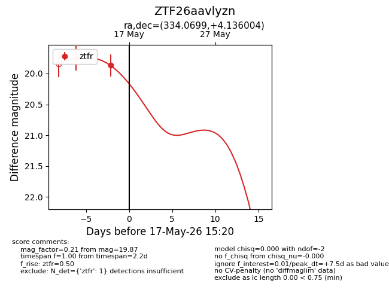
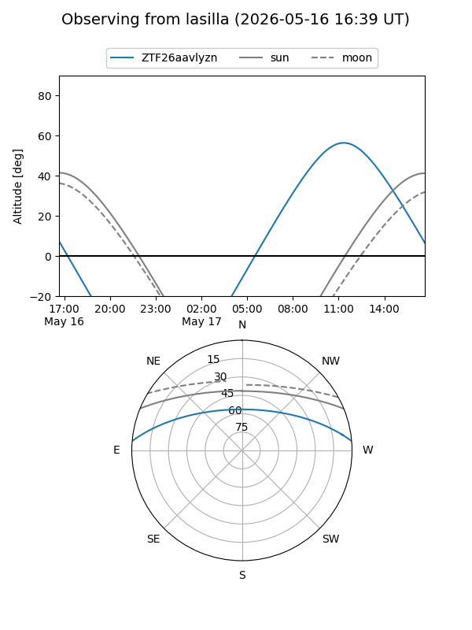
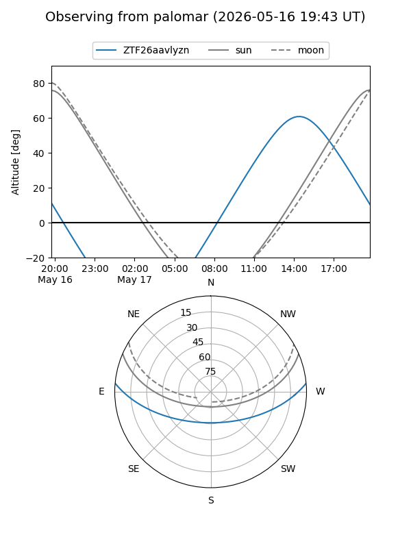
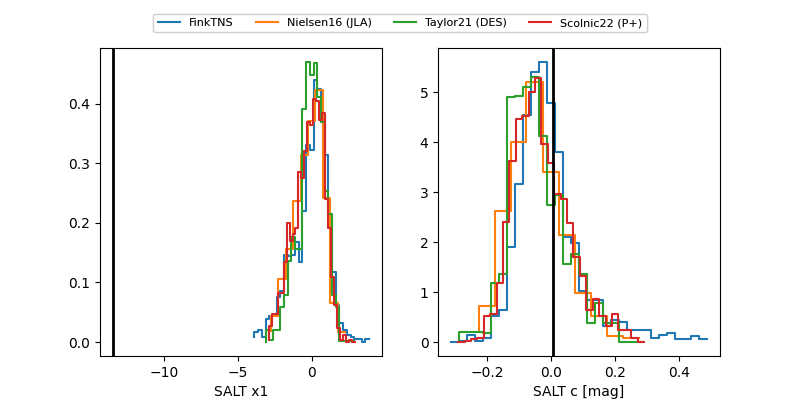

ZTF26aavlyzn
Target ZTF26aavlyzn at 2026-05-17 15:22
Aliases and brokers:
FINK: link
Lasair: link
ALeRCE: link
alt names
ZTF26aavlyzn (ztf,fink_ztf)
Coordinates:
equatorial (ra, dec) = 334.0699,+4.13600
equatorial (HMS+DMS) = 22:16:16.77,+04:08:09.61
galactic (l, b) = (66.7568,-41.22431)
Flags:
Photometry:
last ztfr=19.87
1 ztfr detections
Lightcurve

Visibility


Additional plots
